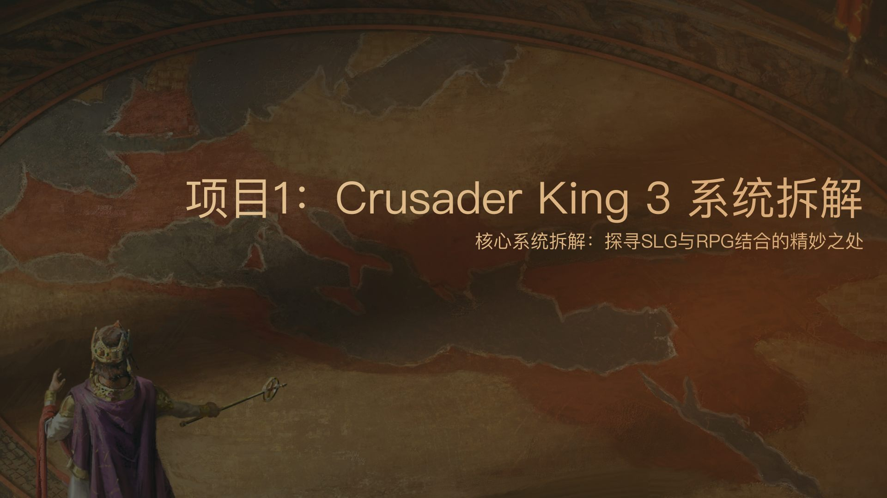
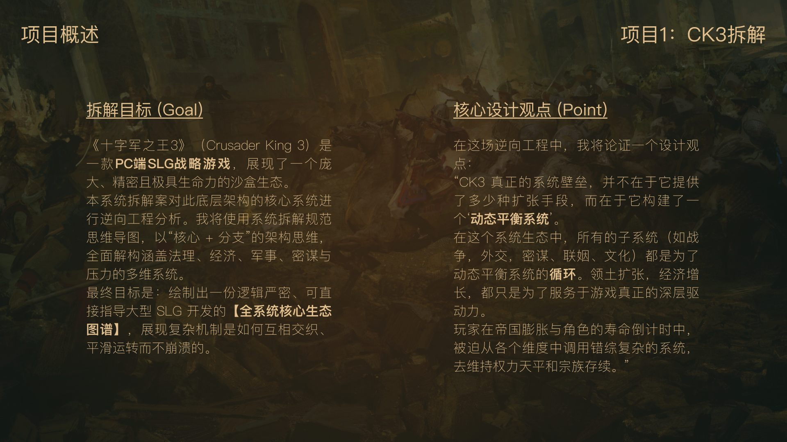
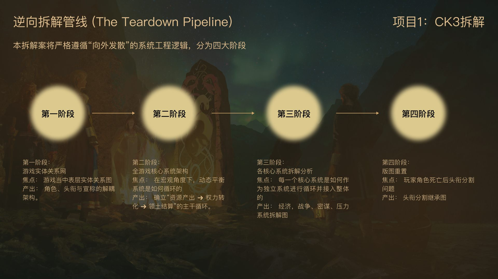
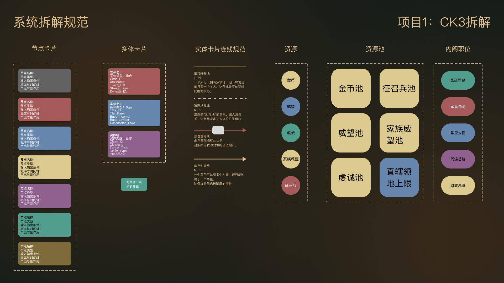
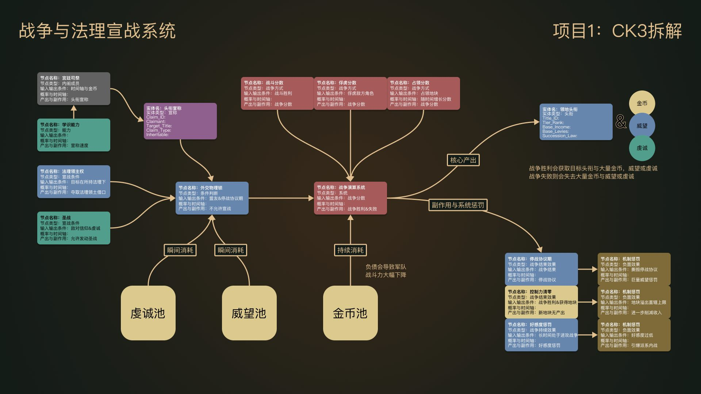
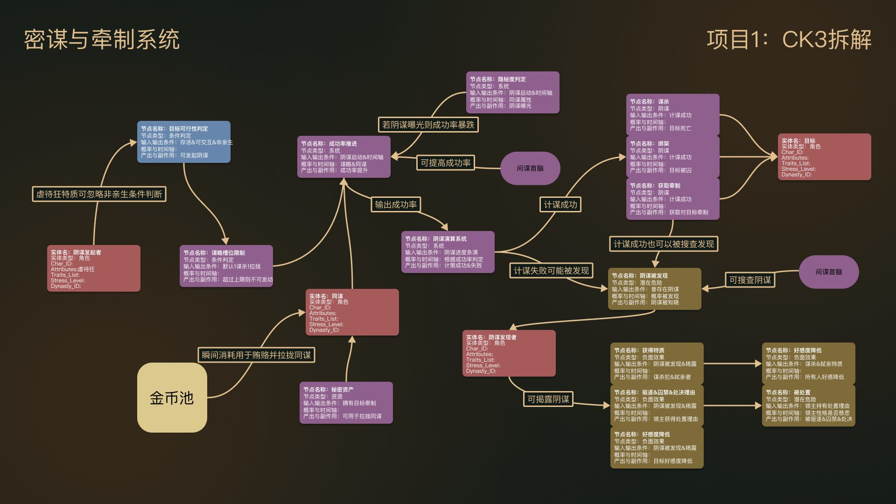
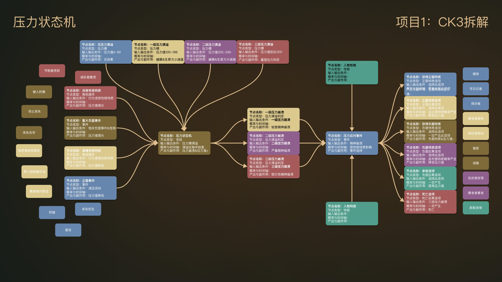

CK3 是我玩得最久的游戏。这份拆解想搞清楚一件事：法理、经济、军事、密谋、压力这么多系统，到底是怎么咬合在一起转起来的。
拆完之后我的结论是：CK3 靠"动态平衡"续命——你一辈子攒下的扩张和发展，最后都要拿去对抗角色寿命和继承制带来的权力重置。
CK3 是我玩得最久的游戏。这份拆解想搞清楚一件事：法理、经济、军事、密谋、压力这么多系统，到底是怎么咬合在一起转起来的。
拆完之后我的结论是：CK3 靠"动态平衡"续命——你一辈子攒下的扩张和发展，最后都要拿去对抗角色寿命和继承制带来的权力重置。


系统太大，一口吃不下，我分四步拆：先解宏观实体关系，再定核心循环，然后逐个深拆子系统，最后看继承和版图重置。
图例是先统一定好的——资源池、内阁职位、实体卡片各有各的画法，连线也分绝对持有线和法理从属线。这样十几张图说的是同一套语言，不用每张重新学。


宏观上这个游戏其实只有三类实体：角色、头衔、宣称。持有和附庸关系把它们连成一张权力网络。
核心循环是内阁、密谋、战争这些模块不断往外产出资源和头衔，玩家一边收，一边处理它们带来的副作用——派系反叛、压力堆积。

支撑游戏运转的四个子系统，我各画了一张状态机 / 逻辑流图：



角色一死，均分继承把你的领土强制切给所有继承人，控制力断崖下跌——这是 CK3 最重要的系统重置节点。下一代开局就是收拾烂摊子，再用战争和密谋把地一块块拿回来。整个游戏的生命周期就在这里闭环。